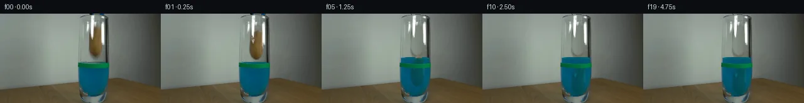

![首帧]()

Round 00
2026-11-05T15:54:52.750499+00:00像素候选变化代码 +255/−0inspection 更新
pixels a8017c50b676e597 · code 57c63ce72eee6d11
查看本轮 generate.py 真实 diff
--- previous/generate.py
+++ current/generate.py
@@ -0,0 +1,255 @@
+"""Source-image pixel continuation; no external assets or learned models."""
+from pathlib import Path
+import json
+import numpy as np
+from PIL import Image, ImageDraw, ImageFilter
+from scipy.ndimage import gaussian_filter, map_coordinates
+from artifact_io import save
+
+ROOT = Path(__file__).resolve().parent
+TEMP = ROOT / '.tmp'
+TEMP.mkdir(exist_ok=True)
+H, W = 144, 256
+SOURCE = np.array(Image.open(ROOT / 'first_frame.png').convert('RGB'))
+SRC = SOURCE.astype(np.float64)
+Y, X = np.mgrid[:H, :W].astype(float)
+
+
+def smoothstep(a, b, values):
+ v = np.clip((values - a) / (b - a), 0, 1)
+ return v * v * (3 - 2 * v)
+
+
+def polygon_mask(points, blur=0.6):
+ scale = 4
+ im = Image.new('L', (W * scale, H * scale))
+ ImageDraw.Draw(im).polygon([(round(x*scale), round(y*scale)) for x,y in points], fill=255)
+ if blur:
+ im = im.filter(ImageFilter.GaussianBlur(blur * scale))
+ return np.array(im.resize((W,H),Image.Resampling.LANCZOS)).astype(float) / 255
+
+
+def composite(back, fore, alpha):
+ return back * (1-alpha[...,None]) + fore * alpha[...,None]
+
+
+# Observed contour of the potato, excluding the glass highlights in front of it.
+contour = [(151,17.8),(155.8,18.5),(159.8,23.5),(162,31),
+ (163.1,43),(163,53.5),(161.8,59),(158.7,64.5),
+ (155.7,67.3),(151.6,68.2),(147.4,66.5),(144.1,63.2),
+ (141.7,57),(140.9,51.5),(141.7,42),(143.1,33),
+ (146.6,24),(149.1,20)]
+potato_alpha = polygon_mask(contour, 0.68)
+
+# Infer the gray wall seen through the emptied glass from the exposed left
+# portion and a smooth right-hand gradient. All changes are confined to the
+# old potato silhouette and its blurred optical shadow.
+left_gray = gaussian_filter(np.median(SRC[:,133:137],axis=1), (1.2,0))
+right_gray = np.zeros_like(left_gray)
+for y in range(H):
+ right_gray[y] = np.array([110,119,110]) + 2.0*np.exp(-((y-29)/24)**2)
+fraction = np.clip((X-137)/27,0,1)
+empty_glass = left_gray[:,None,:]*(1-fraction[...,None]) + right_gray[:,None,:]*fraction[...,None]
+# Small texture inherited from neighboring, unoccluded glass pixels.
+texture = SRC[:,133:137,:].mean(axis=1) - gaussian_filter(SRC[:,133:137,:].mean(axis=1),(1.7,0))
+empty_glass += texture[:,None,:] * .38
+erase = gaussian_filter(potato_alpha,1.15)
+shadow = np.exp(-((X-152.0)/8.0)**2-((Y-68)/6.3)**2) * .65
+erase = np.maximum(erase, shadow)
+erase *= ((X>138)&(X<165)&(Y>15)&(Y<78))
+
+# Fixed bright front-glass reflections. A bright neutral source pixel is
+# treated as reflected light, rather than as potato texture.
+lum = SRC.mean(axis=2)
+neutral = 1-smoothstep(15,48,SRC.max(axis=2)-SRC.min(axis=2))
+reflection = smoothstep(153,237,lum) * neutral
+reflection *= ((X>140)&(X<167)&(Y>4)&(Y<53))
+erase *= (1-reflection)
+clean = composite(SRC,empty_glass,erase)
+
+# Build the source potato texture. Interpolate across glass-reflection holes
+# using brown pixels from the same horizontal cross-section.
+is_brown = ((SRC[...,0]-SRC[...,1]>0)&
+ (SRC[...,0]-SRC[...,2]>14)&
+ (SRC[...,1]-SRC[...,2]>7)&(potato_alpha>.20))
+potato = np.zeros_like(SRC)
+valid_rows = []
+for y in range(16,71):
+ indices = np.flatnonzero(is_brown[y])
+ if len(indices):
+ valid_rows.append(y)
+ for c in range(3):
+ potato[y,:,c] = np.interp(np.arange(W),indices,SRC[y,indices,c])
+for y in range(H):
+ if y not in valid_rows:
+ nearest = min(valid_rows,key=lambda k:abs(k-y))
+ potato[y] = potato[nearest]
+potato = gaussian_filter(potato,(.45,.40,0))
… diff truncated; 168 more lines …